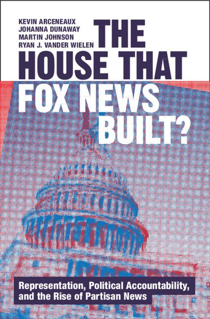
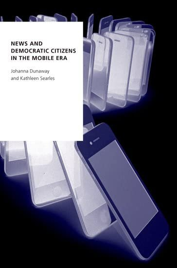
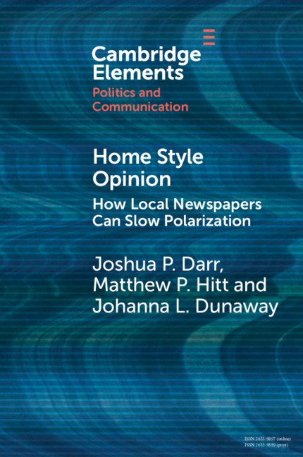

Professor of Political Science, Syracuse University · Research Director, Institute for Democracy, Journalism, & Citizenship
I study how the news media environment shapes what citizens know, believe, and do in politics.
I am a professor of political science in the Maxwell School of Citizenship and Public Affairs at Syracuse University and research director of the university’s Institute for Democracy, Journalism, & Citizenship (IDJC) in Washington, D.C. My work examines news media and political communication, with an emphasis on how a changing media environment affects political knowledge, attitudes, and behavior.
My recent books are Home Style Opinion: How Local Newspapers Can Slow Polarization (2021), News and Democratic Citizens in the Mobile Era (2022), and The House that Fox News Built? Representation, Political Accountability, and the Rise of Partisan News (2025). I am an Andrew Carnegie Fellow for my work on news and polarization.
Google ScholarORCID 0000-0003-3975-5227Curriculum VitaeCV (PDF)

The House that Fox News Built? Representation, Political Accountability, and the Rise of Partisan NewsCambridge University Press, 2025
News and Democratic Citizens in the Mobile EraOxford University Press, Digital Politics Series, 2022
Home Style Opinion: How Local Newspapers Can Slow PolarizationCambridge University Press, Elements in Politics and Communication, 2021Current roles
- 2026–Co-Editor in Chief (with Travis Ridout), Political Communication
- 2025–2026Public Policy Fellow, Reilly Center for Media & Public Affairs, Manship School of Mass Communication, Louisiana State University
- 2023–Professor, Department of Political Science, Syracuse University; Research Director, IDJC; Editorial Board, American Journal of Political Science
Honors
- 2024Andrew Carnegie Fellow, Carnegie Corporation of New York.
- 2019Walter Lippmann Best Published Article Award, Political Communication Section, American Political Science Association. With Kathleen Searles, Mingxiao Sui, and Newly Paul, “News Attention in a Mobile Era.”
- 2018Lynda Lee Kaid Best Published Article in Political Communication, Political Communication Division, AEJMC. With Joshua Darr and Matthew Hitt, “Newspaper Closures Polarize Voting Behavior.”
Education
- 2006Ph.D., Department of Political Science, Rice University
- 2004M.A., Department of Political Science, Rice University
- 1999B.A., Political Science, University of North Texas